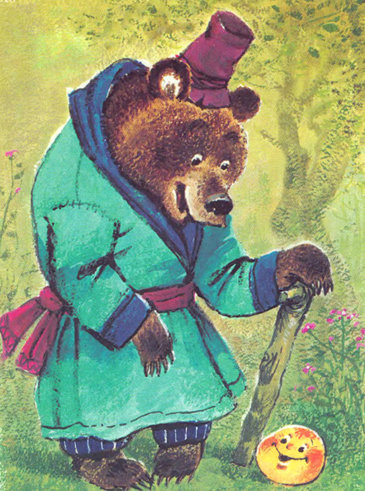
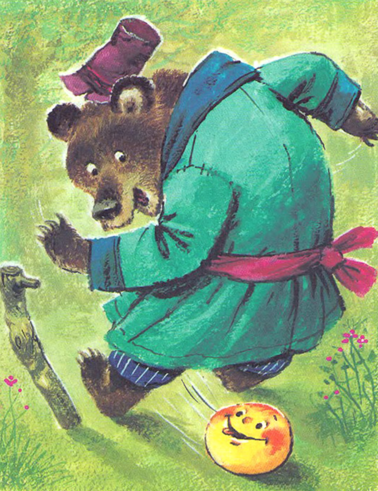

Я ведмідь
Знову біжить та й біжить, — зустрічає його ведмідь:
-
Колобок, колобок, я тебе з'їм!
Не їж мене, ведмедику-братику, я тобі пісню заспіваю.
-
Ану!
— Я по коробу метений, На яйцях спечений, — Я од баби та од діда втік, Я від зайця втік, Од вовка вітк, Так і од тебе втечу!
-
Та покотився далі!
